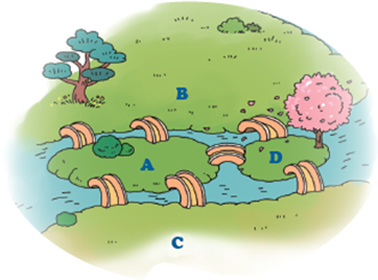

스스로 해결하기
다리 건너기 문제
모델링
다음 글을 읽고 펜툴로 그래프를 그려 지도의 핵심 요소를 모델링해 보자.
프로이센의
쾨니히스베르크
에는 프레겔강과 강으로 둘러싸인 섬이 2개가 있고 섬을 잇는 다리는 총 7개이다. 어느 한 곳에서 출발하여 7개의 다리들을 모두 한 번씩만 건너서 출발한 곳으로 다시 돌아오는 것이 가능할까?

쾨니히스베르크
고대 프로이센 왕국의 수도로, 오늘날 러시아 칼리닌그라드이다.
모델링 팁!
지도의 구역을 A~D로 정하고 각 지역을 잇는 다리를 선으로 연결해서 그래프를 그릴 수 있다.